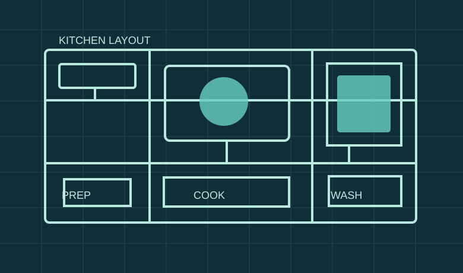

HOME / ABOUT
ABOUT
30년의 현장 경험,
계속되는 기술 연구
1995년 창업 이후 제과·상업용 주방기기와 외식산업을 기반으로 연구개발, 제조·유통, 현장 컨설팅을 확장해 왔습니다.
HANBIT INDUSTRY기계만 보지 않습니다.
기계만 보지 않습니다.
조리와 공간을 함께 봅니다.
조리기술에 대한 연구, 전문 조리기자재의 이해, 현장 설계·시공 경험을 융합해 운영 환경에 맞는 솔루션을 고민합니다.
2020년 회사소개서에는 주방기기·제과기기, 연구개발, 생산·유통·서비스, 창업 및 인테리어 컨설팅 이력이 정리돼 있습니다.

공간 구성 설명용 개념도
HISTORY
브랜드의 기반이 된 주요 이정표
1995
한빛산업 창립
2010–2012
쌀가루 조리법 및 조리기자재 연구개발 수행 이력
2013
관련 연구보고서와 복합오븐 개발 연구 자료
2025
폴리텍대학 인천·강서 관련 주방설비 설계자료
연도와 업무 범위는 회사소개서 및 파일의 작성 시점을 바탕으로 정리했습니다. 계약 준공일을 의미하지 않습니다.
CAPABILITIES
핵심 역량 네 가지
01
연구개발
식품과 조리방법의 요구사항을 장비 기능과 설계로 연결합니다.
02
주방 시스템 설계
조리·전처리·세척·배식 구역과 설비 조합을 계획합니다.
03
기자재·공조 엔지니어링
급배기·후드·덕트 및 조리기자재의 기술 조건을 검토합니다.
04
현장 대응과 사후관리
설치 후 운영 조건을 고려한 A/S·B/S 대응체계를 지향합니다.
자료 출처
한빛산업 「회사소개서」(2020.02), Google Drive kfoodtech한빛산업 폴더. 회사소개서에 포함된 개인 자격증 번호·개인 주소·세무정보 등은 웹사이트에 게시하지 않았습니다.